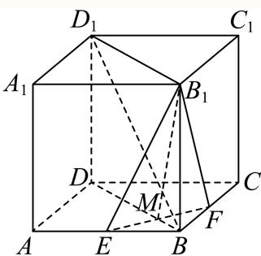
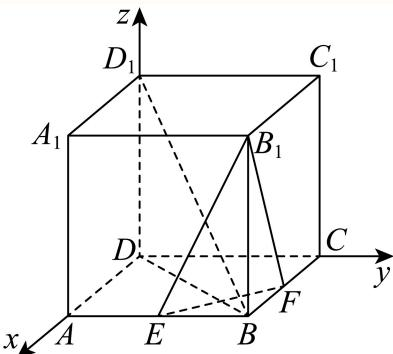

填空题按本区原卷题号顺序排列。杨浦 · 第1题 ★☆☆☆☆ · 教师预估已知集合 A={a,b}A = \{ a , b \}A={a,b} ，则A的子集个数为 考点：有限集合子集个数。难度依据：有限集合子集个数；按所需步骤与推理量估计核查说明：题干与解析已用于人工归类，尚未完成整题公式校净与独立数学终审。展开答案与解析【答案】4. 【解析】 利用子集概念列举出即可得到答案. 集合A = {a, b},则集合A的子集有：∅ {a}, {b}, {a, b} 所以集合A的子集个数有4个. 故答案为：4. 杨浦 · 第2题 ★☆☆☆☆ · 教师预估函数 y=sin2xy = \sin 2 xy=sin2x 的最小正周期是 考点：三角函数最小正周期。难度依据：三角函数最小正周期；按所需步骤与推理量估计核查说明：题干与解析已用于人工归类，尚未完成整题公式校净与独立数学终审。展开答案与解析【答案】π 【解析】 y=sin2xy = \sin 2 xy=sin2x 的最小正周期是 2π2=π.\frac { 2 \pi } { 2 } = \pi .22π=π. 故答案为：π 杨浦 · 第3题 ★☆☆☆☆ · 教师预估不等式 x+2x−1<\frac { x + 2 } { x - 1 } <x−1x+2< 0的解集为 考点：分式不等式符号分析。难度依据：分式不等式符号分析；按所需步骤与推理量估计核查说明：题干与解析已用于人工归类，尚未完成整题公式校净与独立数学终审。展开答案与解析【答案】(−2, 1). 【解析】 首先将分式不等式转化为二次不等式，利用一元二次不等式的解法，求得其解集即可. 分式不等式 x+2x−1<0∃]{ \frac { x + 2 } { x - 1 } } < 0 \exists ]x−1x+2<0∃] 以转化为 (x+2)(x−1)<0( x + 2 ) ( x - 1 ) < 0(x+2)(x−1)<0 ，解得 −2<x<1- 2 < x < 1−2<x<1 所以原不等式的解集为(−2,1). 故答案为：(−2, 1). 杨浦 · 第4题 ★☆☆☆☆ · 教师预估已知函数 [yy=x2+ax+1]\left[ { { y } \atop { y } } = { { x } ^ { 2 } } + a x + 1 \right][yy=x2+ax+1] 是偶函数，则实数a的值为 考点：偶函数与二次项系数。难度依据：偶函数与二次项系数；按所需步骤与推理量估计核查说明：题干与解析已用于人工归类，尚未完成整题公式校净与独立数学终审。展开答案与解析【答案】0 【解析】 根据偶函数的性质即可求解. 由题意可知 x∈R,f(−x)=(−x)2+a(−x)+1=x2−ax+1x \in \mathrm { R } , f \left( - x \right) = \left( - x \right) ^ { 2 } + a \left( - x \right) + 1 = x ^ { 2 } - a x + 1x∈R,f(−x)=(−x)2+a(−x)+1=x2−ax+1 由于f(x)为偶函数，故 f(x)=f(−x)f \left( x \right) = f \left( - x \right)f(x)=f(−x) ，即 ∣x2+ax+1=x2−ax+1| x ^ { 2 } + a x + 1 = x ^ { 2 } - a x + 1∣x2+ax+1=x2−ax+1 ，即 ∣2ax=0\lvert 2 a x = 0∣2ax=0 故答案为：0 杨浦 · 第5题 ★★☆☆☆ · 教师预估已知 ∣∣x+3∣+∣x−5∣=8| | x + 3 | + | x - 5 | = 8∣∣x+3∣+∣x−5∣=8 ，则实数x的取值范围为 考点：绝对值之和与分类讨论。难度依据：绝对值之和与分类讨论；按所需步骤与推理量估计核查说明：题干与解析已用于人工归类，尚未完成整题公式校净与独立数学终审。展开答案与解析【答案】[−3, 5]. 【解析】 讨论去绝对值求解. 由 ∣x+3∣+∣x−5∣=8,| x + 3 | + | x - 5 | = 8 ,∣x+3∣+∣x−5∣=8, 当x < −3时，上式为 −x−3+5−x=8\begin{array} { r } { - x - 3 + 5 - x = 8 } \end{array}−x−3+5−x=8 ，解得x = −3（舍）， 当x > 5时，上式为 x+3+x−5=8x + 3 + x - 5 = 8x+3+x−5=8 ，解得x = 5（舍）， Ydashv3≤x≤\ Ydashv 3 \leq x \leq Ydashv3≤x≤ 5时，上式为 x+3+5−x=8x + 3 + 5 - x = 8x+3+5−x=8 所以实数的x的取值范围为[−3,5]. 故答案为：[−3, 5]. 杨浦 · 第6题 ★★☆☆☆ · 教师预估已知 ∣a⃗∣=∣b⃗∣=1\left| { \vec { a } } \right| = \left| { \vec { b } } \right| = 1∣a∣=b=1 ，若 (2a→−b→)⊥b→\left( \overrightarrow { 2 a } - \overrightarrow { b } \right) \perp \overrightarrow { b }(2a−b)⊥b ，则向 Eq→a→.\textstyle { \overrightarrow { \operatorname { E q } } } { \overrightarrow { a } } .Eqa. 与 ∣b→\overrightarrow { \vert b }∣b 的夹角的余弦值为 考点：垂直数量积与夹角。难度依据：垂直数量积与夹角；按所需步骤与推理量估计核查说明：题干与解析已用于人工归类，尚未完成整题公式校净与独立数学终审。展开答案与解析【答案】12.{ \frac { 1 } { 2 } } .21. 【解析】 设向量 a→ –∇→b→\overrightarrow { a } \overrightarrow { \ – \mathbf { \nabla } } \overrightarrow { b }a –∇b 的夹角为θ，根据向量垂直运算可得答案. 设向量 ⋅⃗a⃗ –⃗ȷ⃗b\vec { \cdot } \vec { a } \vec { \ – } \vec { \jmath } _ { b } ^ { }⋅a –b 的夹角为 θ(θ∈[0,π])\theta \left( \theta \in \left[ 0 , \pi \right] \right)θ(θ∈[0,π]) 1 若 (2a→−b→)⊥b→\left( \overrightarrow { 2 a } - \overrightarrow { b } \right) \perp \overrightarrow { b }(2a−b)⊥b ，则 (2a^−b→)⋅b→=0,\left( { \widehat { 2 a } } - { \overrightarrow { b } } \right) \cdot { \overrightarrow { b } } = 0 ,(2a−b)⋅b=0, 所以2→a ⋅→b −→b 2 = 2 →b 2 b cos θ − = 2 cos θ − 1 = 0， 可得 cosθ=12\cos \theta = { \frac { 1 } { 2 } }cosθ=21 故答案为： 12.{ \frac { 1 } { 2 } } .21. 杨浦 · 第7题 ★★☆☆☆ · 教师预估已知一个正四棱锥的每一条棱长都为2，则该四棱锥的体积为 考点：正四棱锥高与体积。难度依据：正四棱锥高与体积；按所需步骤与推理量估计核查说明：题干与解析已用于人工归类，尚未完成整题公式校净与独立数学终审。展开答案与解析【答案】423\frac { 4 { \sqrt { 2 } } } { 3 }342 【解析】 作出辅助线，求出正四棱锥的高，由锥体体积公式进行求解. 如图，正四棱锥P−ABCD，正方形ABCD的对角线相交于点O，连接PO， 则 PO⊥P O \botPO⊥ 平面ABCD， 因为 BD⊂B D \subsetBD⊂ 平面 ABCDA B C DABCD ，所以 PO⊥BDP O \bot B DPO⊥BD 其中 BO=12BD=1222+22=2,B O = { \frac { 1 } { 2 } } B D = { \frac { 1 } { 2 } } { \sqrt { 2 ^ { 2 } + 2 ^ { 2 } } } = { \sqrt { 2 } } ,BO=21BD=2122+22=2, 故 OP=BP2−OB2=2,O P = \sqrt { B P ^ { 2 } - O B ^ { 2 } } = \sqrt { 2 } ,OP=BP2−OB2=2, 所以该四棱锥的体积为 13AB⋅BC⋅OP=423{ \frac { 1 } { 3 } } A B \cdot B C \cdot O P = { \frac { 4 { \sqrt { 2 } } } { 3 } }31AB⋅BC⋅OP=342 故答案为： 423\frac { 4 { \sqrt { 2 } } } { 3 }342 杨浦 · 第8题 ★★☆☆☆ · 教师预估本题资料或解析有待核事项，预览不可作为已审定成品。某次杨浦区高三质量调研数学试卷中的填空题第八题，答对得5分，答错或不答得0分，全区共4000人参加调研，该题的答题正确率是60%，则该次调研中全区同学该题得分的方差为 考点：二点分布的方差。难度依据：二点分布的方差；按所需步骤与推理量估计核查说明：题干与解析已用于人工归类，尚未完成整题公式校净与独立数学终审。；区名为脱敏占位符，来源身份须回核。；原解均值一处误写为345，按列式应为3；原解方差计算使用3。展开答案与解析【答案】6. 【解析】 根据平均数和方差的定义计算求解即可. 同全区同学中答对的人数为 4000×60%=24004 0 0 0 \times 6 0 \% = 2 4 0 04000×60%=2400 人，答错或不答的人数为1600人， 所以全区同学该题得分的平均数为 2400×5+1600×04000=345\frac { 2 4 0 0 \times 5 + 1 6 0 0 \times 0 } { 4 0 0 0 } = 3 4 540002400×5+1600×0=345 ， 则全区同学该题得分的方差为 2400×(5−3)2+1600×(0−3)24000=6.{ \frac { 2 4 0 0 \times ( 5 - 3 ) ^ { 2 } + 1 6 0 0 \times ( 0 - 3 ) ^ { 2 } } { 4 0 0 0 } } = 6 .40002400×(5−3)2+1600×(0−3)2=6. 故答案为：6. 杨浦 · 第9题 ★★★☆☆ · 教师预估将一个半径为1的球形石材加工成一个圆柱形摆件，则该圆柱形摆件侧面积的最大值为 考点：球内接圆柱侧面积最值；基本不等式。难度依据：球内接圆柱侧面积最值；基本不等式；按所需步骤与推理量估计核查说明：题干与解析已用于人工归类，尚未完成整题公式校净与独立数学终审。展开答案与解析【答案】2π. 【解析】 设圆柱形工件的高为h，底面半径为r，得到圆柱形工件的侧面积为 S=2πrhS = 2 \pi r hS=2πrh ，再结合基本不等式求解侧面积的最大值. 设圆柱形工件的高为h，底面半径为r， h24+r2=1{ \frac { h ^ { 2 } } { 4 } } + r ^ { 2 } = 14h2+r2=1 则圆柱形工件的侧面积为 S=2πrh=2πr4(1−r2)=4πr2(1−r2);S = 2 \pi r h = 2 \pi r \sqrt { 4 \left( 1 - r ^ { 2 } \right) } = 4 \pi \sqrt { r ^ { 2 } \left( 1 - r ^ { 2 } \right) } ;S=2πrh=2πr4(1−r2)=4πr2(1−r2); 又因为 1=r2+(1−r2)≥2r2(1−r2)1 = r ^ { 2 } + \left( 1 - r ^ { 2 } \right) \geq 2 { \sqrt { r ^ { 2 } \left( 1 - r ^ { 2 } \right) } }1=r2+(1−r2)≥2r2(1−r2) 当且仅当 r2=(1−r2),r=22r ^ { 2 } = \big ( 1 - r ^ { 2 } \big ) , r = \frac { \sqrt { 2 } } { 2 }r2=(1−r2),r=22 时等号成立， 所以 S=4πr2(1−r2)≤4π×12=2π,S = 4 \pi { \sqrt { r ^ { 2 } \left( 1 - r ^ { 2 } \right) } } \leq 4 \pi \times { \frac { 1 } { 2 } } = 2 \pi ,S=4πr2(1−r2)≤4π×21=2π, 故答案为：2π. 杨浦 · 第10题 ★★★☆☆ · 教师预估已知 ∣f(x)={x13,0≤x≤a,log3x,x>a\begin{array} { r } { | f \left( x \right) = \left\{ \begin{array} { l l } { x ^ { \frac { 1 } { 3 } } , } & { 0 \leq x \leq a , } \\ { \log _ { 3 } x , } & { x > a } \end{array} \right. } \end{array}∣f(x)={x31,log3x,0≤x≤a,x>a ，其中实数 .a>0. a > 0.a>0 .若函数 y˙=f(x)−2\dot { \boldsymbol { y } } = f \left( \boldsymbol { x } \right) - 2y˙=f(x)−2 有且仅有2个零点，则a的取值范围为 考点：分段函数零点与参数范围。难度依据：分段函数零点与参数范围；按所需步骤与推理量估计核查说明：题干与解析已用于人工归类，尚未完成整题公式校净与独立数学终审。展开答案与解析【答案】[8, 9). 【解析】 由题意可知f(x) = 2有两根，通过方程求解即可. 由题意可知： f(x)=2f \left( x \right) = 2f(x)=2 有两根，结合 f(x)f \left( x \right)f(x) 在[0, a]和 ∣(a,+∞)\textstyle | ( a , + \infty )∣(a,+∞) 都是单调递增， 所以 .x13=2. x ^ { \frac { 1 } { 3 } } = 2.x31=2 有一解，解得： x=8x = 8x=8 log3x=2\log _ { 3 } x = 2log3x=2 有一解，解得： x=9x = 9x=9 所以 8≤a<98 \leq a < 98≤a<9 故答案为：[8, 9). 杨浦 · 第11题 ★★★☆☆ · 教师预估中国探月工程又称“嫦娥工程”，是中国航天活动的第三个里程碑.在探月过程中，月球探测器需要进行变轨，即从一条椭圆轨道变到另一条不同的椭圆轨道上.若变轨前后的两条椭圆轨道均以月球中心为一个焦点，变轨后椭圆轨道上的点与月球中心的距离最小值保持不变，而距离最大值扩大为变轨前的4倍，椭圆轨道的离心率扩大为变轨前的2.5倍，则变轨前的椭圆轨道的离心率为（精确到0.01） 考点：椭圆焦半径与离心率。难度依据：椭圆焦半径与离心率；按所需步骤与推理量估计核查说明：题干与解析已用于人工归类，尚未完成整题公式校净与独立数学终审。展开答案与解析【答案】0.31. 【解析】 根据椭圆上点到焦点距离最小值为 a−c,a - c ,a−c, ，到焦点距离最大值为 [a+c,[ a + c ,[a+c, ，列式运算得解. 设变轨前的椭圆的长半轴长为 [a1[ a _ { 1 }[a1 ，短半轴长为 b1b _ { 1 }b1 ，半焦距为 ∣c1\lvert c _ { 1 }∣c1 ，离心率为 e1e _ { 1 }e1 ， 变轨后的椭圆的长半轴长为 tan2.\tan _ { 2 } .tan2. ，短半轴长为 b2b _ { 2 }b2 ，半焦距为 c2c _ { 2 }c2 ，离心率为 ∣e2\lvert e _ { 2 }∣e2 ， 由题意可得 {a1−c1=a2−c24(a1+c1)=a2+c22.5c1a1=c2a2\left\{ { \begin{array} { l } { a _ { 1 } - c _ { 1 } = a _ { 2 } - c _ { 2 } } \\ { 4 \left( a _ { 1 } + c _ { 1 } \right) = a _ { 2 } + c _ { 2 } } \\ { 2 . 5 { \frac { c _ { 1 } } { a _ { 1 } } } = { \frac { c _ { 2 } } { a _ { 2 } } } } \end{array} } \right.⎩⎨⎧a1−c1=a2−c24(a1+c1)=a2+c22.5a1c1=a2c2 ，化简得 52⋅c1a1=3a1+5c15a1+3c1{ \frac { 5 } { 2 } } \cdot { \frac { c _ { 1 } } { a _ { 1 } } } = { \frac { 3 a _ { 1 } + 5 c _ { 1 } } { 5 a _ { 1 } + 3 c _ { 1 } } }25⋅a1c1=5a1+3c13a1+5c1 即 52e1=3+5e15+3e1\frac { 5 } { 2 } e _ { 1 } = \frac { 3 + 5 e _ { 1 } } { 5 + 3 e _ { 1 } }25e1=5+3e13+5e1 ，解得 e1=−5+6510≈0.31e _ { 1 } = { \frac { - 5 + { \sqrt { 6 5 } } } { 1 0 } } \approx 0 . 3 1e1=10−5+65≈0.31 （负值舍去）. 故答案为：0.31. 杨浦 · 第12题 ★★★★★ · 教师预估本题资料或解析有待核事项，预览不可作为已审定成品。已知实数 a>0a>0a>0，i\mathrm{i}i 是虚数单位，设集合 A={z∣z=w+1w, ∣w∣>1, w∈C, z∈C}A=\{z\mid z=w+\frac1w,\ |w|>1,\ w\in\mathbf C,\ z\in\mathbf C\}A={z∣z=w+w1, ∣w∣>1, w∈C, z∈C}，集合 B={z∣∣z−1+i∣=a, z∈C}B=\{z\mid |z-1+\mathrm{i}|=a,\ z\in\mathbf C\}B={z∣∣z−1+i∣=a, z∈C}。如果 B⊆AB\subseteq AB⊆A，则 aaa 的取值范围为______。 考点：复变换与几何轨迹；圆与实轴线段相离；集合包含。难度依据：需确定复变换值域并将包含问题转为圆与线段的位置关系；长解细节待审。核查说明：原MD漏失A的定义及a>0条件；从同名PDF文字层恢复完整题干。PDF第4页底部印刷裁切，A定义未完整可见，不能称已全题视觉确认。；题干与解析已用于人工归类，尚未完成整题公式校净与独立数学终审。；解法二纯虚数分支对q<0的构造及负实数分支符号存在问题，需审解；结论不据此改写。展开答案与解析【答案】(0,1)∪(10,+∞)( 0 , 1 ) \cup \left( \sqrt { 1 0 } , + \infty \right)(0,1)∪(10,+∞) 【解析】 解法一：明确集合A，B的几何意义，数形结合，根据几何意义即可求得参数范围. 解法二：先证明不属于A的复数z，恰好是那些区间[−2,2]上的实数，再利用该结论得到取值范围. 解法一：由于 ∣w∣>1| w | > 1∣w∣>1 ，设 w=r(cosθ+isinθ),r>1w = r ( \cos \theta + \mathrm { i } \sin \theta ) , r > 1w=r(cosθ+isinθ),r>1 ， w+1w=r(cosθ+isinθ)+1r(cosθ+isinθ) w + \frac {1}{w} = r (\cos \theta + \mathrm{i} \sin \theta) + \frac {1}{r (\cos \theta + \mathrm{i} \sin \theta)} w+w1=r(cosθ+isinθ)+r(cosθ+isinθ)1 =r(cosθ+isinθ)+cosθ−isinθr=(r+1r)cosα+i(r−1r)sinα, = r (\cos \theta + \mathrm{i} \sin \theta) + \frac {\cos \theta - \mathrm{i} \sin \theta}{r} = \left(r + \frac {1}{r}\right) \cos \alpha + \mathrm{i} \left(r - \frac {1}{r}\right) \sin \alpha , =r(cosθ+isinθ)+rcosθ−isinθ=(r+r1)cosα+i(r−r1)sinα, 设z对应点(x, y)，则 x=(r+1r)cosα,y=(r−1r)sinαx = \left( r + { \frac { 1 } { r } } \right) \cos \alpha , y = \left( r - { \frac { 1 } { r } } \right) \sin \alphax=(r+r1)cosα,y=(r−r1)sinα 所以 x2(r+1r)2+y2(r−1r)2=1{ \frac { x ^ { 2 } } { \left( r + { \frac { 1 } { r } } \right) ^ { 2 } } } + { \frac { y ^ { 2 } } { \left( r - { \frac { 1 } { r } } \right) ^ { 2 } } } = 1(r+r1)2x2+(r−r1)2y2=1 ，其中 r+1r>2,r−1r>0r + \frac { 1 } { r } > 2 , r - \frac { 1 } { r } > 0r+r1>2,r−r1>0 当 r>1H)r > 1 { \mathbb { H } } )r>1H) ，该方程的几何意义为表示所有椭圆的并集， 即平面上除去线段 A1A2A _ { 1 } A _ { 2 }A1A2 的点的集合，其中 A1(−2,0),A2(2,0)A _ { 1 } ( - 2 , 0 ) , A _ { 2 } ( 2 , 0 )A1(−2,0),A2(2,0) 集合 B={z∣∣z−1+i∣=a,z∈C}B = \{ z \mid | z - 1 + \mathbf { i } | = a , z \in \mathbf { C } \}B={z∣∣z−1+i∣=a,z∈C} 表示复平面上的圆，圆心为(1,−1)，半径为a， 如果 B⊆AB \subseteq AB⊆A ，则该圆与线段 A1A2A _ { 1 } A _ { 2 }A1A2 无公共点， 结合图形可知a的取值范围为(0,1)∪ (10,+∞)\left( { \sqrt { 1 0 } } , + \infty \right)(10,+∞) ； 解法二： 先证明：不属于A的复数z，恰好是那些区间[−2,2]上的实数. 下设z是复数. ①情况一：z不是实数，也不是纯虚数. 设 ⋅z=r⋅eiα(r≥0,α∈R),z2−4=R⋅eiβ(R≥0,β∈R){ \boldsymbol { \cdot } } { \boldsymbol { z } } = r \cdot \mathrm { e } ^ { \mathrm { i } \alpha } \left( r \geq 0 , \alpha \in \mathbf { R } \right) , z ^ { 2 } - 4 = R \cdot \mathrm { e } ^ { \mathrm { i } \beta } \left( R \geq 0 , \beta \in \mathbf { R } \right)⋅z=r⋅eiα(r≥0,α∈R),z2−4=R⋅eiβ(R≥0,β∈R) ，并令 w1=r⋅eiα+R⋅ei⋅β22w _ { 1 } = { \frac { r \cdot \mathrm { e } ^ { \mathrm { i } \alpha } + { \sqrt { R } } \cdot \mathrm { e } ^ { \mathrm { i } \cdot { \frac { \beta } { 2 } } } } { 2 } }w1=2r⋅eiα+R⋅ei⋅2β w2=r⋅eiα−R⋅ei⋅β22w _ { 2 } = { \frac { r \cdot \mathrm { e } ^ { \mathrm { i } \alpha } - { \sqrt { R } } \cdot \mathrm { e } ^ { \mathrm { i } \cdot { \frac { \beta } { 2 } } } } { 2 } }w2=2r⋅eiα−R⋅ei⋅2β 则对 k=1,2,k = 1 , 2 ,k=1,2, ，有 (wk−z2)2=(wk−r⋅eiα2)2=(R⋅eiβ22)2=R⋅eiβ4=z2−44\left( w _ { k } - { \frac { z } { 2 } } \right) ^ { 2 } = \left( w _ { k } - { \frac { r \cdot \mathrm { e } ^ { \mathrm { i } \alpha } } { 2 } } \right) ^ { 2 } = \left( { \frac { { \sqrt { R } } \cdot \mathrm { e } ^ { \mathrm { i } { \frac { \beta } { 2 } } } } { 2 } } \right) ^ { 2 } = { \frac { R \cdot \mathrm { e } ^ { \mathrm { i } \beta } } { 4 } } = { \frac { z ^ { 2 } - 4 } { 4 } }(wk−2z)2=(wk−2r⋅eiα)2=(2R⋅ei2β)2=4R⋅eiβ=4z2−4 ，即 wk2−z⋅wk+1=0. w _ {k} ^ {2} - z \cdot w _ {k} + 1 = 0. wk2−z⋅wk+1=0. 假设 wk=0w _ { k } = 0wk=0 ，则 ∣0=wk2−z⋅wk+1=02−z⋅0+1=1| 0 = w _ { k } ^ { 2 } - z \cdot w _ { k } + 1 = 0 ^ { 2 } - z \cdot 0 + 1 = 1∣0=wk2−z⋅wk+1=02−z⋅0+1=1 ，矛盾，所以 wk≠0w _ { k } \neq 0wk=0 ，从而 wk+1wk=z.w _ { k } + \frac { 1 } { w _ { k } } = z .wk+wk1=z. 又因为 w1w2=(r⋅eiα)2−(R⋅ei⋅β2)24=z2−R⋅eiβ4=z2−(z2−4)4=1,\mathfrak { w } _ { 1 } \mathfrak { w } _ { 2 } = \frac { \left( r \cdot \mathrm { e } ^ { \mathrm { i } \alpha } \right) ^ { 2 } - \left( \sqrt { R } \cdot \mathrm { e } ^ { \mathrm { i } \cdot \frac { \beta } { 2 } } \right) ^ { 2 } } { 4 } = \frac { z ^ { 2 } - R \cdot \mathrm { e } ^ { \mathrm { i } \beta } } { 4 } = \frac { z ^ { 2 } - \left( z ^ { 2 } - 4 \right) } { 4 } = 1 ,w1w2=4(r⋅eiα)2−(R⋅ei⋅2β)2=4z2−R⋅eiβ=4z2−(z2−4)=1, 所以 1=∣1∣=∣w1w2∣=∣w1∣∣w2∣.1 = | 1 | = | w _ { 1 } w _ { 2 } | = | w _ { 1 } | | w _ { 2 } | .1=∣1∣=∣w1w2∣=∣w1∣∣w2∣. 此时，假设 ∣w1∣=∣w2∣=1 :| w _ { 1 } | = | w _ { 2 } | = 1 \colon∣w1∣=∣w2∣=1: ：由于 w1=reiα+Rei⋅β22=(r2cosα+R2cosβ2)+(r2sinα+R2sinβ2)i, w _ {1} = \frac {r \mathrm{e} ^ {\mathrm{i} \alpha} + \sqrt {R} \mathrm{e} ^ {\mathrm{i} \cdot \frac {\beta}{2}}}{2} = \left(\frac {r}{2} \cos \alpha + \frac {\sqrt {R}}{2} \cos \frac {\beta}{2}\right) + \left(\frac {r}{2} \sin \alpha + \frac {\sqrt {R}}{2} \sin \frac {\beta}{2}\right) \mathrm{i}, w1=2reiα+Rei⋅2β=(2rcosα+2Rcos2β)+(2rsinα+2Rsin2β)i, 故 1=12=∣w1∣2=(r2cosα+R2cosβ2)2+(r2sinα+R2sinβ2)2=r24+R4+rR2cos(α−β2) \begin{array}{l} 1 = 1 ^ {2} = | w _ {1} | ^ {2} = \left(\frac {r}{2} \cos \alpha + \frac {\sqrt {R}}{2} \cos \frac {\beta}{2}\right) ^ {2} + \left(\frac {r}{2} \sin \alpha + \frac {\sqrt {R}}{2} \sin \frac {\beta}{2}\right) ^ {2} = \frac {r ^ {2}}{4} + \frac {R}{4} + \frac {r \sqrt {R}}{2} \cos \\ \left(\alpha - \frac {\beta}{2}\right) \end{array} 1=12=∣w1∣2=(2rcosα+2Rcos2β)2+(2rsinα+2Rsin2β)2=4r2+4R+2rRcos(α−2β) 同理，根据 ∣w2∣=1| w _ { 2 } | = 1∣w2∣=1 可以得到 1=r24+R4−rR2cos(α−β2)1 = { \frac { r ^ { 2 } } { 4 } } + { \frac { R } { 4 } } - { \frac { r { \sqrt { R } } } { 2 } } \mathrm { c o s } \left( \alpha - { \frac { \beta } { 2 } } \right)1=4r2+4R−2rRcos(α−2β) 对 .=r24+R4+rR2cos(α−β2). = { \frac { r ^ { 2 } } { 4 } } + { \frac { R } { 4 } } + { \frac { r { \sqrt { R } } } { 2 } } \cos \left( \alpha - { \frac { \beta } { 2 } } \right).=4r2+4R+2rRcos(α−2β) 和1 =r24+R4−rR2cos(α−β2)= { \frac { r ^ { 2 } } { 4 } } + { \frac { R } { 4 } } - { \frac { r { \sqrt { R } } } { 2 } } \cos \left( \alpha - { \frac { \beta } { 2 } } \right)=4r2+4R−2rRcos(α−2β) 相加和相减， 就能得到 1=r24+R4,rR2cos(α−β2)=0.1 = { \frac { r ^ { 2 } } { 4 } } + { \frac { R } { 4 } } , { \frac { r { \sqrt { R } } } { 2 } } \mathrm { c o s } \left( \alpha - { \frac { \beta } { 2 } } \right) = 0 .1=4r2+4R,2rRcos(α−2β)=0. 若假设R = 0，则 (z−2)(z+2)=z2−4=Reiβ=0( z - 2 ) ( z + 2 ) = z ^ { 2 } - 4 = R \mathrm { e } ^ { \mathrm { i } \beta } = 0(z−2)(z+2)=z2−4=Reiβ=0 ，从而 z=2z = 2z=2 或 z=−2z = - 2z=−2 这和情况一的定义矛盾，所以 R>0R > 0R>0 若假设 r=0\boldsymbol { r } = 0r=0 ，则 z=r⋅eiα=0z = r \cdot \mathrm { e } ^ { \mathrm { i } \alpha } = 0z=r⋅eiα=0 ，从而 z=0z = 0z=0 ，这和情况一的定义矛盾，所以 r>0r > 0r>0 这就得到 rR2>0.\frac { r \sqrt { R } } { 2 } > 0 .2rR>0. ，所以 cos(α−β2)\cos \left( \alpha - { \frac { \beta } { 2 } } \right)cos(α−2β) = 0，所以 β2=α+(2m−1)⋅π2(m∈Z)\frac { \beta } { 2 } = \alpha + \left( 2 m - 1 \right) \cdot \frac { \pi } { 2 } ( m \in \mathbf { Z } )2β=α+(2m−1)⋅2π(m∈Z) 即 ∣β=2α+(2m−1)π(m∈Z)\displaystyle | \beta = 2 \alpha + ( 2 m - 1 ) \pi \left( m \in \mathbf { Z } \right)∣β=2α+(2m−1)π(m∈Z) 这就得到 R (reiα)2 ⋅ ei(2m−1)π R 2 − 4 = ⋅ eiβ = ⋅ ei(2α+(2m−1)π) = e2iα ⋅ ei(2m−1)π z2 2 i(2m−1)π r2 r2 所以 z2−4=Rr2iz ^ { 2 } - 4 = { \frac { R } { r ^ { 2 } } } iz2−4=r2Ri z2或 z2−4=−Rr2z2z ^ { 2 } - 4 = - { \frac { R } { r ^ { 2 } } } z ^ { 2 }z2−4=−r2Rz2 ，无论哪种情况都能得到 z2z ^ { 2 }z2 是实数，故可设 z2=c∈Rz ^ { 2 } = c \in \mathbf { R }z2=c∈R 若 c≥0.c \geq 0 .c≥0. ，则 0=z2−c=(z−c)(z+c)0 = z ^ { 2 } - c = \left( z - { \sqrt { c } } \right) \left( z + { \sqrt { c } } \right)0=z2−c=(z−c)(z+c) ，得 z=±cz = \pm \sqrt { { \mathfrak { c } } }z=±c c是实数，这和情况一的定义矛盾. 若 c<0:c < 0 _ { : }c<0: ，则 0=z2−c=(z−ic)(z+ic)0 = z ^ { 2 } - c = \left( z - \mathrm { i } { \sqrt { c } } \right) \left( z + \mathrm { i } { \sqrt { c } } \right)0=z2−c=(z−ic)(z+ic) ，得 z=±iz = \pm \mathrm { i } \sqrt { }z=±i c是纯虚数，这和情况一的定义矛 盾. 故前面的假设 ∣w1∣=∣w2∣=1| w _ { 1 } | = | w _ { 2 } | = 1∣w1∣=∣w2∣=1 不成立，所以结合 l =∣w1∣∣w2∣\mathrm { ~ l ~ } = \left| w _ { 1 } \right| \left| w _ { 2 } \right| l =∣w1∣∣w2∣ |可知， 一定存在k = 1,2使得 ∣wk∣>1| w _ { k } | > 1∣wk∣>1 ，结合 wk+1wk=z⊞⋆¨∥z∈Aw _ { k } + \frac { 1 } { w _ { k } } = z ^ { \boxplus } \ddot { \star } \boxed { \| } z \in Awk+wk1=z⊞⋆¨∥z∈A ②情况二：z是纯虚数. 此时设 z=q1˙(q≠0)z = \dot { q 1 } ( q \neq 0 )z=q1˙(q=0) ，则 w=q+q2+42w = \frac { q + \sqrt { q ^ { 2 } + 4 } } { 2 }w=2q+q2+4 i满 Ξ˙∣w∣=q+q2+42>0+0+42=1\dot { \Xi } | w | = { \frac { q + \sqrt { q ^ { 2 } + 4 } } { 2 } } > { \frac { 0 + \sqrt { 0 + 4 } } { 2 } } = 1Ξ˙∣w∣=2q+q2+4>20+0+4=1 w+1w=q+q2+42i+1q+q2+42i=q+q2+42i−2q+q2+4i=q+q2+42i−q2+4−q2i=qi=z \begin{array}{l} {w + \frac {1}{w} = \frac {q + \sqrt {q ^ {2} + 4}}{2} \mathrm{i} + \frac {1}{\frac {q + \sqrt {q ^ {2} + 4}}{2} \mathrm{i}} = \frac {q + \sqrt {q ^ {2} + 4}}{2} \mathrm{i} - \frac {2}{q + \sqrt {q ^ {2} + 4}} \mathrm{i} = \frac {q + \sqrt {q ^ {2} + 4}}{2} \mathrm{i}} \\ {- \frac {\sqrt {q ^ {2} + 4} - q}{2} \mathrm{i} = q \mathrm{i} = z} \end{array} w+w1=2q+q2+4i+2q+q2+4i1=2q+q2+4i−q+q2+42i=2q+q2+4i−2q2+4−qi=qi=z 故 z∈A.z \in A .z∈A. ③情况三：z是实数， Ez>2.\mathrm { { E } } z > 2 .Ez>2. 此时 w=z+z2−42w = \frac { z + \sqrt { z ^ { 2 } - 4 } } { 2 }w=2z+z2−4 满足 ∣w∣=∣z+z2−42∣=z+z2−42>2+22−42=1,| w | = \left| { \frac { z + { \sqrt { z ^ { 2 } - 4 } } } { 2 } } \right| = { \frac { z + { \sqrt { z ^ { 2 } - 4 } } } { 2 } } > { \frac { 2 + { \sqrt { 2 ^ { 2 } - 4 } } } { 2 } } = 1 ,∣w∣=2z+z2−4=2z+z2−4>22+22−4=1, 且 ⌊w+1w=z+z2−42+2z+z2−4=z+z2−42+z−z2−42=z,\lfloor w + { \frac { 1 } { w } } = { \frac { z + { \sqrt { z ^ { 2 } - 4 } } } { 2 } } + { \frac { 2 } { z + { \sqrt { z ^ { 2 } - 4 } } } } = { \frac { z + { \sqrt { z ^ { 2 } - 4 } } } { 2 } } + { \frac { z - { \sqrt { z ^ { 2 } - 4 } } } { 2 } } = z ,⌊w+w1=2z+z2−4+z+z2−42=2z+z2−4+2z−z2−4=z, ，故 (z∈A( z \in A(z∈A ④情况四：z是实数，且 z<−2z < - 2z<−2 此时 w=−z+z2−42w = \frac { - z + \sqrt { z ^ { 2 } - 4 } } { 2 }w=2−z+z2−4 满足 ∣w∣=∣−z+z2−42∣=(−z)+(−z)2−42>2+22−42=1, | w | = \left| \frac {- z + \sqrt {z ^ {2} - 4}}{2} \right| = \frac {(- z) + \sqrt {(- z) ^ {2} - 4}}{2} > \frac {2 + \sqrt {2 ^ {2} - 4}}{2} = 1, ∣w∣=2−z+z2−4=2(−z)+(−z)2−4>22+22−4=1, 且 w+1w=z−z2−42+2z−z2−4=z−z2−42+z+z2−42=z,w + \frac { 1 } { w } = \frac { z - \sqrt { z ^ { 2 } - 4 } } { 2 } + \frac { 2 } { z - \sqrt { z ^ { 2 } - 4 } } = \frac { z - \sqrt { z ^ { 2 } - 4 } } { 2 } + \frac { z + \sqrt { z ^ { 2 } - 4 } } { 2 } = z ,w+w1=2z−z2−4+z−z2−42=2z−z2−4+2z+z2−4=z, ，故 z∈Az \in Az∈A ⑤情况五：z是实数， Ez∈[−2,2]\mathrm { E } z \in [ - 2 , 2 ]Ez∈[−2,2] 假设 z∈A.z \in A .z∈A. 则存在复数w使得 ∣w∣>1| w | > 1∣w∣>1 ，且 ⋅w+1w=z,{ \boldsymbol { \cdot } } { \boldsymbol { w } } + { \frac { 1 } { w } } = { \boldsymbol { z } } ,⋅w+w1=z, ，设 w=r0⋅eiθ(r0>1,θ∈R)w = r _ { 0 } \cdot \mathrm { e } ^ { \mathrm { i } \theta } \left( r _ { 0 } > 1 , \theta \in \mathbf { R } \right)w=r0⋅eiθ(r0>1,θ∈R) ∣z=w+1w=r0eiθ+1r0⋅eiθ=r0eiθ+1r0e−iθ=(r0+1r0)cosθ+i(r0−1r0)sinθ. | z = w + \frac {1}{w} = r _ {0} \mathrm{e} ^ {\mathrm{i} \theta} + \frac {1}{r _ {0} \cdot \mathrm{e} ^ {\mathrm{i} \theta}} = r _ {0} \mathrm{e} ^ {\mathrm{i} \theta} + \frac {1}{r _ {0}} \mathrm{e} ^ {- \mathrm{i} \theta} = \left(r _ {0} + \frac {1}{r _ {0}}\right) \cos \theta + \mathrm{i} \left(r _ {0} - \frac {1}{r _ {0}}\right) \sin \theta . ∣z=w+w1=r0eiθ+r0⋅eiθ1=r0eiθ+r01e−iθ=(r0+r01)cosθ+i(r0−r01)sinθ. 从而 (r0+1r0)cosθ=z,(r0−1r0)sinθ=0\left( r _ { 0 } + { \frac { 1 } { r _ { 0 } } } \right) \cos \theta = z , \left( r _ { 0 } - { \frac { 1 } { r _ { 0 } } } \right) \sin \theta = 0(r0+r01)cosθ=z,(r0−r01)sinθ=0 而由 r0>1r _ { 0 } > 1r0>1 可知 ∣r0−1r0>1−11=0.\vert r _ { 0 } - \frac { 1 } { r _ { 0 } } > 1 - \frac { 1 } { 1 } = 0 .∣r0−r01>1−11=0. 所以 sinθ=0\sin \theta = 0sinθ=0 ，故 ∣cosθ∣=1| \cos \theta | = 1∣cosθ∣=1 这就得到 :≥∣z∣=∣(r0+1r0)cosθ∣=r0+1r0=(r0−1)2+2r0r0>2r0r0=2,{ \mathrm { ~ : } } \geq | z | = \left| \left( r _ { 0 } + { \frac { 1 } { r _ { 0 } } } \right) \cos \theta \right| = r _ { 0 } + { \frac { 1 } { r _ { 0 } } } = { \frac { ( r _ { 0 } - 1 ) ^ { 2 } + 2 r _ { 0 } } { r _ { 0 } } } > { \frac { 2 r _ { 0 } } { r _ { 0 } } } = 2 , :≥∣z∣=(r0+r01)cosθ=r0+r01=r0(r0−1)2+2r0>r02r0=2, ，矛盾.所以假设不成立，从而z ∉ A. 综合上面五种情况，就得到了结论：不属于A的复数z，恰好是那些区间[−2,2]上的实数现在回到原题，结合上面的结论，条件等价于B中包含的每个实数都不属于[−2,2]. 一方面，若B中包含一个实数z，满足 −2≤z≤2- 2 \leq z \leq 2−2≤z≤2 则 ∣a=∣z−1+i∣=(z−1)2+1≥1| a = | z - 1 + \mathbf { i } | = { \sqrt { ( z - 1 ) ^ { 2 } + 1 } } \geq 1 \quad∣a=∣z−1+i∣=(z−1)2+1≥1 a=∣z−1+i∣=(z−1)2+1=(z+2)(z−4)+10≤10a = | z - 1 + \mathrm { i } | = { \sqrt { \left( z - 1 \right) ^ { 2 } + 1 } } = { \sqrt { \left( z + 2 \right) \left( z - 4 \right) + 1 0 } } \leq { \sqrt { 1 0 } }a=∣z−1+i∣=(z−1)2+1=(z+2)(z−4)+10≤10 ，从而1 ≤a≤10.\leq a \leq { \sqrt { 1 0 } } .≤a≤10. 另一方面，若 1≤a≤101 \leq a \leq \sqrt { 1 0 }1≤a≤10 ，则实数 z=1−a2−1z = 1 - \sqrt { a ^ { 2 } - 1 }z=1−a2−1 1满足 z=1−a2−1≥1−(10)2−1=1−9=−2,z=1−a2−1≤1≤2. z = 1 - \sqrt {a ^ {2} - 1} \geq 1 - \sqrt {\left(\sqrt {1 0}\right) ^ {2} - 1} = 1 - \sqrt {9} = - 2, z = 1 - \sqrt {a ^ {2} - 1} \leq 1 \leq 2. z=1−a2−1≥1−(10)2−1=1−9=−2,z=1−a2−1≤1≤2. 故B中包含一个实数z，满 E−2≤z≤2\begin{array} { r } { \mathbb { E } - 2 \le z \le 2 } \end{array}E−2≤z≤2 这就说明，B中包含一个实数z满足−2 ≤ z ≤ 2的充要条件是1 ≤a≤10.\leq a \leq { \sqrt { 1 0 } } .≤a≤10. 所以a的取值范围是 (0,1)∪(10,+∞)( 0 , 1 ) \cup \left( \sqrt { 1 0 } , + \infty \right)(0,1)∪(10,+∞) 故答案为： (0,1)∪(10,+∞)( 0 , 1 ) \cup \left( \sqrt { 1 0 } , + \infty \right)(0,1)∪(10,+∞) 关键点点睛：本题的关键在于对复数知识和三角恒等变换的使用. 二、选择题 选择题按本区原卷题号顺序排列。杨浦 · 第13题 ★★☆☆☆ · 教师预估已知实数 [a≠0,[ a \neq 0 ,[a=0, ，则 ∗a>2∗^ { * } a > 2 ^ { * }∗a>2∗ 是 ¨ 1 a< 1 2\ddot { } \frac { \mathrm { ~ \scriptsize ~ 1 ~ } } { a } < \frac { \mathrm { ~ \scriptsize ~ 1 ~ } } { 2 }¨a 1 <2 1 ”的（ ）条件. A. 充分非必要 B. 必要非充分 C. 充分必要 D. 既非充分也非必要 考点：充分必要条件；分式不等式。难度依据：充分必要条件；分式不等式；按所需步骤与推理量估计核查说明：题干与解析已用于人工归类，尚未完成整题公式校净与独立数学终审。展开答案与解析【答案】A 【解析】 根据分式不等式化简可得 ⋅a>2∄λa<0\cdot a > 2 \nexists \lambda a < 0⋅a>2∄λa<0 即可根据集合间的关系求解.由 1a<12\frac { 1 } { a } < \frac { 1 } { 2 }a1<21 得 2−a2a<0\frac { 2 - a } { 2 a } < 02a2−a<0 ，解得 a>2∄λa<0a > 2 \nexists \lambda a < 0a>2∄λa<0 •F{a∣a>\mathbb { F } \{ a | a >F{a∣a> 2} {a∣a>\{ a | a >{a∣a> 2或 a<0}a < 0 \}a<0} ，∗a>2∗^ { * } a > 2 ^ { * }∗a>2∗ 是 ⋅ 1a<12 { \mathrm { ~ ~ \cdot ~ } } \frac { 1 } { a } < \frac { 1 } { 2 } ⋅ a1<21 ”的充分不必要条件，故选：A 杨浦 · 第14题 ★★☆☆☆ · 教师预估本题资料或解析有待核事项，预览不可作为已审定成品。如果A､B是独立事件，A,B分别是A､B的对立事件，那么以下等式不一定成立的是（ ）. A. P(A∩B)=P(A)P(B)P \left( A \cap B \right) = P \left( A \right) P \left( B \right)P(A∩B)=P(A)P(B) B. P(A‾∩B)=P(A‾)P(B)P \left( { \overline { { A } } } \cap B \right) = P \left( { \overline { { A } } } \right) P \left( B \right)P(A∩B)=P(A)P(B) C. P(A∪B)=P(A)+P(B)P \left( A \cup B \right) = P \left( A \right) + P \left( B \right)P(A∪B)=P(A)+P(B) D. P(A‾∩B‾)=[1−P(A)][1−P(B)]P \left( { \overline { { A } } } \cap { \overline { { B } } } \right) = \left[ 1 - P \left( A \right) \right] \left[ 1 - P \left( B \right) \right]P(A∩B)=[1−P(A)][1−P(B)] 考点：独立事件与对立事件。难度依据：独立事件与对立事件；按所需步骤与推理量估计核查说明：题干与解析已用于人工归类，尚未完成整题公式校净与独立数学终审。；题干对立事件记号与原解部分上划线有识别缺损。展开答案与解析【答案】C 【解析】 根据相互独立事件的定义以及性质，即可结合选项逐一求解. 对于A,由于A､B是独立事件，故 P(A∩B)=P(A)P(B)P \left( A \cap B \right) = P \left( A \right) P \left( B \right)P(A∩B)=P(A)P(B) ，A正确， 对于B，由于A､B是独立事件，则 A‾,B{ \overline { { A } } } , BA,B 也是相互独立事件，故 P(A‾∩B)=P(A‾)P(B)P \left( { \overline { { A } } } \cap B \right) = P \left( { \overline { { A } } } \right) P \left( B \right)P(A∩B)=P(A)P(B) ，B正确， 对于C， P(A∪B)=P(A)+P(B)−P(A∩B)P \left( A \cup B \right) = P \left( A \right) + P \left( B \right) - P \left( A \cap B \right)P(A∪B)=P(A)+P(B)−P(A∩B) ,故由 FP(A∩B)\operatorname { F } P \left( A \cap B \right)FP(A∩B) )不一定为0，故C错误，对于D, 由于A､B是独立事件，则A,B也是相互独立事件， P (A ∩ B) = P (A)P (B) = [1 − P (A)] [1 − P (B)],D正确，– 故选：C 杨浦 · 第15题 ★★★★☆ · 教师预估本题资料或解析有待核事项，预览不可作为已审定成品。小李研究数学建模“雨中行”问题，在作出“降雨强度保持不变”､“行走速度保持不变”､“将人体视作一个长方体”等合理假设的前提下，他设了变量： 并构建模型如下： 当人迎风行走时，人体总的淋雨量为 Σ[T=pwDv[dvr+h(vw+v)]\mathrm { \Sigma } [ T = \frac { p w D } { v } [ d v _ { r } + h \left( v _ { w } + v \right) ]Σ[T=vpwD[dvr+h(vw+v)] 根据模型，小李对“雨中行”作出如下解释： ①若两人结伴迎风行走，则体型较高大魁梧的人淋雨是较大； ②若某人迎风行走，则走得越快淋雨量越小，若背风行走，则走得越慢淋雨量越小； ③若某人迎风行走了10秒，则行走距离越长淋雨量越大 这些解释合理的个数为（ ） A. 0 B. 1 C. 2 D. 3 考点：淋雨模型变量比较与单调性。难度依据：淋雨模型变量比较与单调性；按所需步骤与推理量估计核查说明：题干与解析已用于人工归类，尚未完成整题公式校净与独立数学终审。；模型变量解释表缺失，无法核实全部实际含义。；原解背风分支符号变化的文字表述有误，且变量表缺失，需回核。展开答案与解析【答案】C 【解析】 利用作差法可以比较两人淋雨量判断①，结合函数的单调性可判断②③.①若两人结伴迎风行走，设体型较高大魁梧的人身高为 ∣h1\lvert h _ { 1 }∣h1 ，宽度为w ，厚度为 w1w _ { 1 }w1 ∣d1\lvert d _ { 1 }∣d1 ，另一人身高为h2，宽度为w2，厚度为 ∣d2\lvert d _ { 2 }∣d2 ，则T1−T2=pw1Dv[d1vr+h1(vw+v)]−pw2Dv[d2vr+h2(vw+v)]=pDv[vr(w1d1−w2d2)+(vw+v)(w1h1−w2h2)]\begin{array} { l } { \displaystyle { T _ { 1 } - T _ { 2 } = \frac { p w _ { 1 } D } { v } [ d _ { 1 } v _ { r } + h _ { 1 } \left( v _ { w } + v \right) ] - \frac { p w _ { 2 } D } { v } [ d _ { 2 } v _ { r } + h _ { 2 } \left( v _ { w } + v \right) ] = \frac { p D } { v } } } \\ { \displaystyle { \left[ v _ { r } \left( w _ { 1 } d _ { 1 } - w _ { 2 } d _ { 2 } \right) + \left( v _ { w } + v \right) \left( w _ { 1 } h _ { 1 } - w _ { 2 } h _ { 2 } \right) \right] } } \end{array}T1−T2=vpw1D[d1vr+h1(vw+v)]−vpw2D[d2vr+h2(vw+v)]=vpD[vr(w1d1−w2d2)+(vw+v)(w1h1−w2h2)] ，又 h1>h2>0,w1>w2>0,d1>d2>0h _ { 1 } > h _ { 2 } > 0 , w _ { 1 } > w _ { 2 } > 0 , d _ { 1 } > d _ { 2 } > 0 _ { }h1>h2>0,w1>w2>0,d1>d2>0 则 ∣w1d1>w2d2, w1h1>w2h2| w _ { 1 } d _ { 1 } > w _ { 2 } d _ { 2 } , ~ w _ { 1 } h _ { 1 } > w _ { 2 } h _ { 2 }∣w1d1>w2d2, w1h1>w2h2 即 1T1−T2=pDv[vr(w1d1−w2d2)+(vw+v)(w1h1−w2h2)]>0,1 T _ { 1 } - T _ { 2 } = \frac { p D } { v } [ v _ { r } \left( w _ { 1 } d _ { 1 } - w _ { 2 } d _ { 2 } \right) + \left( v _ { w } + v \right) \left( w _ { 1 } h _ { 1 } - w _ { 2 } h _ { 2 } \right) ] > 0 ,1T1−T2=vpD[vr(w1d1−w2d2)+(vw+v)(w1h1−w2h2)]>0, 即体型较高大魁梧的人淋雨是较大，①正确；②若某人迎风行走，则 T=pwDv[dvr+h(vw+v)]=pwDv(dvr+hvw)+pwDh,T = \frac { p w D } { v } [ d v _ { r } + h \left( v _ { w } + v \right) ] = \frac { p w D } { v } ( d v _ { r } + h v _ { w } ) + p w D h ,T=vpwD[dvr+h(vw+v)]=vpwD(dvr+hvw)+pwDh, 则T随v的增大而减小，即走得越快淋雨量越小；若某人逆风行走，则 T=pwDv[dvr+h(−vw+v)]=pwDv(dvr−hvw)+pwDh,T = \frac { p w D } { v } [ d v _ { r } + h \left( - v _ { w } + v \right) ] = \frac { p w D } { v } ( d v _ { r } - h v _ { w } ) + p w D h ,T=vpwD[dvr+h(−vw+v)]=vpwD(dvr−hvw)+pwDh, 当 dvr−hvw>d v _ { r } - h v _ { w } >dvr−hvw> 0时，T随v的增大而减小，即走得越快淋雨量越小，当 dvr−hvw<d v _ { r } - h v _ { w } <dvr−hvw< 0时，，T随v的增大而减小，即走得越慢淋雨量越小，当 dvr−hvw=d v _ { r } - h v _ { w } =dvr−hvw= 0时，淋雨量与v无关，②错误；③若某人迎风行走了10秒，则 Dv=10\frac { D } { v } = 1 0vD=10 为定值，且 v=D10\displaystyle v = { \frac { D } { 1 0 } }v=10D ， 则 ∣T=10pw⌈dvr+h(vw+D10)⌉\left| T = 1 0 p w \right. \left\lceil d v _ { r } + h \left( v _ { w } + { \frac { D } { 1 0 } } \right) \right\rceil∣T=10pw⌈dvr+h(vw+10D)⌉ 所以T随D的增大而增大，即行走距离越长淋雨量越大，③正确； 综上所述合理的解释有2个， 故选：C. 杨浦 · 第16题 ★★★★☆ · 教师预估本题资料或解析有待核事项，预览不可作为已审定成品。设无穷数列 {an}\left\{ a _ { n } \right\}{an} 的前n项和为 SnS _ { n }Sn ，且对任意的正整数 n,an+1=Snann , a _ { n + 1 } = { \frac { S _ { n } } { a _ { n } } }n,an+1=anSn ，则 ∑i=15a2i−∑i=16a2i−1\sum _ { i = 1 } ^ { 5 } a _ { 2 i } - \sum _ { i = 1 } ^ { 6 } a _ { 2 i - 1 }∑i=15a2i−∑i=16a2i−1 的值可能为（ ） A. −6 B. 0 C. 6 D. 12 考点：前项和递推与奇偶项求和。难度依据：前项和递推与奇偶项求和；按所需步骤与推理量估计核查说明：仅修复所列OCR公式及其定界符错位；原解数学疑点和其他可渲染错识未因此消除。；题干与解析已用于人工归类，尚未完成整题公式校净与独立数学终审。展开答案与解析【答案】A 【解析】 根据 ana _ { n }an 与 SnS _ { n }Sn 的关系，探索数列 {an}\left\{ a _ { n } \right\}{an} 的结构特点，分别求出 ∑i=15a2i\sum _ { i = 1 } ^ { 5 } a _ { 2 i }∑i=15a2i 和 ∑i=16a2i−1\sum _ { i = 1 } ^ { 6 } a _ { 2 i - 1 }∑i=16a2i−1 ，再根据 an≠0a _ { n } \neq 0an=0 及数列 {an}\{ a _ { n } \}{an} 是无穷数列对各选项进行判断 当n = 1时， a2=S1a1=1a _ { 2 } = \frac { S _ { 1 } } { a _ { 1 } } = 1a2=a1S1=1 当 n≥n \geqn≥ 2时， Sn=anan+1S _ { n } = a _ { n } a _ { n + 1 }Sn=anan+1 ，所以 Sn−1=an−1anS _ { n - 1 } = a _ { n - 1 } a _ { n }Sn−1=an−1an 两式相减得： an=an(an+1−an−1)a _ { n } = a _ { n } \left( a _ { n + 1 } - a _ { n - 1 } \right)an=an(an+1−an−1) ，因为 tan≠0\tan \neq 0tan=0 ，所 Xan+1−an−1=1\mathbb { X } a _ { n + 1 } - a _ { n - 1 } = 1Xan+1−an−1=1 所以数列 {an}\{ a _ { n } \}{an} 的奇数项是 ψ1a1\psi _ { 1 } a _ { 1 }ψ1a1 为首项，1为公差的等差数列，且 ⌊a1≠0\lfloor a _ { 1 } \neq 0⌊a1=0 所以 ⋅∑i=16a2i−1=6a1+6×52×1=6a1+15.\cdot \sum _ { i = 1 } ^ { 6 } a _ { 2 i - 1 } = 6 a _ { 1 } + { \frac { 6 \times 5 } { 2 } } \times 1 = 6 a _ { 1 } + 1 5 .⋅∑i=16a2i−1=6a1+26×5×1=6a1+15. 同理，数列 {an}\{ a _ { n } \}{an} 的偶数项是以1为首项，1为公差的等差数列， 所以 ⋅∑i=15a2i=5×1+5×42×1=15.\cdot \sum _ { i = 1 } ^ { 5 } a _ { 2 i } = 5 \times 1 + { \frac { 5 \times 4 } { 2 } } \times 1 = 1 5 .⋅∑i=15a2i=5×1+25×4×1=15. 所以 ∑i=15a2i−∑i=16a2i−1=15−6a1−15=−6a1\sum _ { i = 1 } ^ { 5 } a _ { 2 i } - \sum _ { i = 1 } ^ { 6 } a _ { 2 i - 1 } = 1 5 - 6 a _ { 1 } - 1 5 = - 6 a _ { 1 }∑i=15a2i−∑i=16a2i−1=15−6a1−15=−6a1 若 −6a1=−6⇒a1=1- 6 a _ { 1 } = - 6 { \Rightarrow } a _ { 1 } = 1−6a1=−6⇒a1=1 ，则数列 {an}\{ a _ { n } \}{an} 各项均不为0，数列 {an}\{ a _ { n } \}{an} 是无穷数列，故A正确； 若 ⋅6a1=0⇒a1=0\cdot 6 a _ { 1 } = 0 \Rightarrow a _ { 1 } = 0⋅6a1=0⇒a1=0 ，这与 ι˙a1≠0\dot { \iota } a _ { 1 } \neq 0ι˙a1=0 矛盾，故B错误； 若 −6a1=6⇒a1=−1- 6 a _ { 1 } = 6 \Rightarrow a _ { 1 } = - 1−6a1=6⇒a1=−1 ，根据奇数项成公差为1的等差数列，则 a3=0a _ { 3 } = 0a3=0 ，则 a4\stackrel { } { a } _ { 4 }a4 无法求出，这与数列 {an}\{ a _ { n } \}{an} 是无穷数列矛盾，故C错误； 若− 6a1=12⇒a1=−26 a _ { 1 } = 1 2 { \Rightarrow } a _ { 1 } = - 26a1=12⇒a1=−2 ，根据奇数项成公差为1的等差数列，则 a5=0a_5=0a5=0 ，则 a6a _ { 6 }a6 无法求出，这与数列 {an}\{ a _ { n } \}{an} 是无穷数列矛盾，故D错误. 故选：A 关键点点睛：观察出数列的特点后，一定要注意 an≠0a _ { n } \neq 0an=0 及数列 {an}\{ a _ { n } \}{an} 是无穷数列这两个条件的应用. 三、解答题 解答题按本区原卷题号顺序排列。杨浦 · 第17题 ★★★☆☆ · 教师预估如图，在正方体 ABCD−A1B1C1D1A B C D - A _ { 1 } B _ { 1 } C _ { 1 } D _ { 1 }ABCD−A1B1C1D1 中，点E、F分别是棱AB、BC的中点. (1) (6分)求证： EF⊥BD1E F \bot B D _ { 1 }EF⊥BD1 ； (2) (8分)求二面角 B1−EF−BB _ { 1 } - E F - BB1−EF−B 的大小. 考点：（1）正方体线线垂直；（2）二面角。难度依据：正方体垂直与二面角；向量证明垂直；按所需步骤与推理量估计核查说明：题干与解析已用于人工归类，尚未完成整题公式校净与独立数学终审。展开答案与解析【解析】 (1) 如图所示，连接AC，BD， B1D1B _ { 1 } D _ { 1 }B1D1 ， 由 1BCD−A1B1C1D11 B C D - A _ { 1 } B _ { 1 } C _ { 1 } D _ { 1 }1BCD−A1B1C1D1 为正方体， 可知 AC⊥BDA C \bot B DAC⊥BD • DD1⊥D D _ { 1 \perp }DD1⊥ 平面 ABCDA B C DABCD ，又∵ EF⊂E F \subsetEF⊂ 平面 ABCDA B C DABCD ∴DD1⊥EF, \therefore D D _ {1} \perp E F, ∴DD1⊥EF, ∵E, F\because E , \ F∵E, F 分别为AB，BC中点， ∴EF∥AC,∴EF⊥BD, \therefore E F \parallel A C, \therefore E F \perp B D, ∴EF∥AC,∴EF⊥BD, ∵BD∩DD1=D,\because B D \cap D D _ { 1 } = D ,∵BD∩DD1=D, ，且BD， DD1⊂D D _ { 1 } \subsetDD1⊂ 平面 BDD1B1B D D _ { 1 } B _ { 1 }BDD1B1 ∴EF⊥\therefore E F \bot∴EF⊥ 平面 BDD1B1B D D _ { 1 } B _ { 1 }BDD1B1 ， ∵BD1⊂\because B D _ { 1 } \subset∵BD1⊂ 平面 BDD1B1B D D _ { 1 } B _ { 1 }BDD1B1 ， ∴EF⊥BD1\therefore E F \bot B D _ { 1 }∴EF⊥BD1 ； (2) 设正方体 ABCD−A1B1C1D1A B C D - A _ { 1 } B _ { 1 } C _ { 1 } D _ { 1 }ABCD−A1B1C1D1 棱长为4， 法一：  如图所示，设 EF∩BD=ME F \cap B D = MEF∩BD=M ，连接 B1MB _ { 1 } MB1M 由（1）得 EF⊥E F \botEF⊥ 平面 BDD1B1B D D _ { 1 } B _ { 1 }BDD1B1 ， ∵BM,B1M⊂\because B M , B _ { 1 } M \subset∵BM,B1M⊂ 平面 BDD1B1B D D _ { 1 } B _ { 1 }BDD1B1 ∴BM⊥EF,B1M⊥EF, \therefore B M \perp E F, B _ {1} M \perp E F, ∴BM⊥EF,B1M⊥EF, ∴二面角 B1−EF−B _ { 1 } - E F -B1−EF− B的平面角即为 ∠B1MB\angle B _ { 1 } M B∠B1MB 又 BB1⊥BM⋅B B _ { 1 } \bot B M _ { \cdot }BB1⊥BM⋅ 在Rt △BB1\triangle B B _ { 1 }△BB1 M中， BM=14BD=14AB2+AD2=2,BB1=4,B M = \frac { 1 } { 4 } B D = \frac { 1 } { 4 } \sqrt { A B ^ { 2 } + A D ^ { 2 } } = \sqrt { 2 } , B B _ { 1 } = 4 ,BM=41BD=41AB2+AD2=2,BB1=4, 所以 B1M=B1B2+BM2=42+22=32,B _ { 1 } M = \sqrt { B _ { 1 } B ^ { 2 } + B M ^ { 2 } } = \sqrt { 4 ^ { 2 } + \sqrt { 2 } ^ { 2 } } = 3 \sqrt { 2 } ,B1M=B1B2+BM2=42+22=32, ，所以 cos∠B1MB=BMB1M=13\cos \angle B _ { 1 } M B = \frac { B M } { B _ { 1 } M } = \frac { 1 } { 3 }cos∠B1MB=B1MBM=31 所以二面角 B1−EFB _ { 1 } - E FB1−EF −B的余弦值为 13\frac 1 331 ，即二面角 B1−EF−B _ { 1 } - E F -B1−EF− B的大小为 arccos13\operatorname { a r c c o s } { \frac { 1 } { 3 } }arccos31 ； 法二：  如图所示，以点D为坐标原点，DA，DC， DD1D D _ { 1 }DD1 方向分别为x轴，y轴，z轴建立空间直角坐标系 D−xyzD - x y zD−xyz 则B (4, 4, 0)，E (4, 2, 0)，F (2, 4, 0)， B1(4,4,4)B _ { 1 } \left( 4 , 4 , 4 \right)B1(4,4,4) ， 即 ∣EF→=(−2,2,0),EB1→=(0,2,4)| \overrightarrow { E F } = ( - 2 , 2 , 0 ) , \overrightarrow { E B _ { 1 } } = ( 0 , 2 , 4 )∣EF=(−2,2,0),EB1=(0,2,4) 设平面 B1EFB _ { 1 } E FB1EF 的法向 ≡▽n⃗=(x,y,z)\stackrel { \triangledown } { \equiv } \vec { n } = ( x , y , z )≡▽n=(x,y,z) ，则 {EF→⊥n→EB1→⊥n→,\left\{ \begin{array} { l } { \overrightarrow { E F } \bot \overrightarrow { n } } \\ { \overrightarrow { E B _ { 1 } } \bot \overrightarrow { n } } \end{array} \right. ,{EF⊥nEB1⊥n, 则 {EF→⋅n→=−2x+2y=0EB1→⋅n→=2y+4z=0\left\{ { \begin{array} { l } { { \overrightarrow { E F } } \cdot { \overrightarrow { n } } = - 2 x + 2 y = 0 } \\ { { \overrightarrow { E B _ { 1 } } } \cdot { \overrightarrow { n } } = 2 y + 4 z = 0 } \end{array} } \right.{EF⋅n=−2x+2y=0EB1⋅n=2y+4z=0 令 z=−1z = - 1z=−1 ，则 ∣n⃗=(2,2,−1)\vec { | n } = ( 2 , 2 , - 1 )∣n=(2,2,−1) 易知平面 BEFB E FBEF 的一个法向量为 m→=BB1→=(0,0,4)\overrightarrow { m } = \overrightarrow { B B _ { 1 } } = ( 0 , 0 , 4 )m=BB1=(0,0,4) ∴cos⟨n→,m→⟩=n→⋅m→∣n→∣⋅∣m→∣=−422+22+(−1)2⋅4=−13, \therefore \cos \left\langle \overrightarrow {n}, \overrightarrow {m} \right\rangle = \frac {\overrightarrow {n} \cdot \overrightarrow {m}}{\left| \overrightarrow {n} \right| \cdot \left| \overrightarrow {m} \right|} = \frac {- 4}{\sqrt {2 ^ {2} + 2 ^ {2} + (- 1) ^ {2}} \cdot 4} = - \frac {1}{3}, ∴cos⟨n,m⟩=n⋅mn⋅m=22+22+(−1)2⋅4−4=−31, ∵二面角 B1−EF−BB _ { 1 } - E F - BB1−EF−B 为锐二面角， ∴二面角 B1−EF−B _ { 1 } - E F -B1−EF− B的余弦值为 13\frac 1 331 ， 即二面角 B1−EF−BB _ { 1 } - E F - BB1−EF−B 的大小为 arccos13\operatorname { a r c c o s } { \frac { 1 } { 3 } }arccos31 杨浦 · 第18题 ★★★☆☆ · 教师预估已知 △ABC\triangle A B C△ABC 的内角A､B､C所对边的长度分别为 a,b,c.a , b , c .a,b,c. (1) (6分)若 (a+b)2−c2=4,C=60∘( a + b ) ^ { 2 } - c ^ { 2 } = 4 , C = 6 0 ^ { \circ }(a+b)2−c2=4,C=60∘ ，求 △ABC\triangle A B C△ABC 的面积； (2) (8分)若 cosCc=cosA3b−a{ \frac { \cos C } { c } } = { \frac { \cos A } { 3 b - a } }ccosC=3b−acosA ，求sinC的值. 考点：（1）余弦定理与三角形面积；（2）正余弦定理解角。难度依据：余弦正弦定理解三角形；按所需步骤与推理量估计核查说明：题干与解析已用于人工归类，尚未完成整题公式校净与独立数学终审。展开答案与解析【解析】 (1) 由 (a+b)2−c2=4( a + b ) ^ { 2 } - c ^ { 2 } = 4(a+b)2−c2=4 ，得 a2+b2−c2=4−2aba ^ { 2 } + b ^ { 2 } - c ^ { 2 } = 4 - 2 a ba2+b2−c2=4−2ab 由余弦定理得 c2=a2+b2−2abcosCc ^ { 2 } = a ^ { 2 } + b ^ { 2 } - 2 a b \cos Cc2=a2+b2−2abcosC ，即 ∣a2+b2−c2=ab\displaystyle | a ^ { 2 } + b ^ { 2 } - c ^ { 2 } = a b∣a2+b2−c2=ab 所以 4−2ab=ab4 - 2 a b = a b4−2ab=ab ，即 a˙b=43\dot { a } b = \frac { 4 } { 3 }a˙b=34 ， 所以 △ABC\triangle A B C△ABC 的面积为 12absinC=12×43×32=33{ \frac { 1 } { 2 } } a b \sin C = { \frac { 1 } { 2 } } \times { \frac { 4 } { 3 } } \times { \frac { \sqrt { 3 } } { 2 } } = { \frac { \sqrt { 3 } } { 3 } }21absinC=21×34×23=33 (2) 由 cosCc=cosA3b−a{ \frac { \cos C } { c } } = { \frac { \cos A } { 3 b - a } }ccosC=3b−acosA ，由正弦定理得 cosCsinC=cosA3sinB−sinA{ \frac { \cos C } { \sin C } } = { \frac { \cos A } { 3 \sin B - \sin A } }sinCcosC=3sinB−sinAcosA 可得 3sinBcosC−sinAcosC=cosAsinC3 \sin B \cos C - \sin A \cos C = \cos A \sin C3sinBcosC−sinAcosC=cosAsinC 则3 sinBcosC=cosAsinC+sinAcosC=sin(A+C)=sinB,\sin B \cos C = \cos A \sin C + \sin A \cos C = \sin \left( A + C \right) = \sin B ,sinBcosC=cosAsinC+sinAcosC=sin(A+C)=sinB, 因为 B∈(0,π)B \in ( 0 , \pi )B∈(0,π) ，所 λsinB>0 { \lambda } \sin B > 0λsinB>0 则 cosC=13\cos C = { \frac { 1 } { 3 } }cosC=31 ，又 C∈(0,π)C \in ( 0 , \pi )C∈(0,π) 所以s inC=1−cos2C=223\operatorname { i n } C = { \sqrt { 1 - \cos ^ { 2 } C } } = { \frac { 2 { \sqrt { 2 } } } { 3 } }inC=1−cos2C=322 杨浦 · 第19题 ★★★☆☆ · 教师预估本题资料或解析有待核事项，预览不可作为已审定成品。为加强学生睡眠监测督导，学校对高中三个年级学生的日均睡眠时间进行调查.根据分层随机抽样法，学校在高一､高二和高三年级中共抽取了100名学生的日均睡眠时间作为样本，其中高一35人，高二33人.已知该校高三年级一共512人. (1) (4分)学校高中三个年级一共有多少个学生？ (2) (4分)若抽取100名学生的样本极差为2，数据如下表所示（其中 x<10,nx < 1 0 , nx<10,n 是正整数） 日均睡眠时间（小时） xxx 8.5 9 9.5 10 学生数量 nnn 32 13 11 4 求该样本的第40百分位数。 (3) (6分)从这100名学生的样本中随机抽取三个学生的日均睡眠时间，求其中至少有1个数据来自高三学生的概率. 考点：（1）分层抽样估计总体；（2）极差与百分位数；（3）抽样概率及对立事件。难度依据：分层抽样百分位及古典概型；按所需步骤与推理量估计核查说明：仅修复所列OCR公式及其定界符错位；原解数学疑点和其他可渲染错识未因此消除。；题干与解析已用于人工归类，尚未完成整题公式校净与独立数学终审。；第（2）问数据表缺失，无法核百分位。展开答案与解析【解析】 (1) 设学校高中三个年级一共有N个学生, 因为采用分层抽样法抽取一个容量为100的样本， 在高一年级抽取了35人，高二年级抽取了33人， 所以高三抽取的人数为： 100−35−33=32100-35-33=32100−35−33=32 又因为高三年级一共512人，所以有： 32512=100N\frac { 3 2 } { 5 1 2 } = \frac { 1 0 0 } { N }51232=N100 ，解得 N=1600N = 1 6 0 0N=1600 所以学校高中三个年级一共有1600个学生. (2) 因为抽取100名学生的样本极差为2， x<10,nx < 1 0 , nx<10,n 所以 10−x=2⇒x=81 0 - x = 2 \Rightarrow x = 810−x=2⇒x=8 n=100−32−13−11−4=40. n = 1 0 0 - 3 2 - 1 3 - 1 1 - 4 = 4 0. n=100−32−13−11−4=40. 又因为 100×0.4=40.1 0 0 \times 0 . 4 = 4 0 .100×0.4=40. ，所以样本的第40百分位数为： 8+8.52=8.25.{ \frac { 8 + 8 . 5 } { 2 } } = 8 . 2 5 .28+8.5=8.25. (3) 因为100名学生的样本中随机抽取三个学生的总情况数为： C1003=161700.C _ { 1 0 0 } ^ { 3 } = 1 6 1 7 0 0 .C1003=161700. 其中至少有1个数据来自高三学生的情况为： C321⋅C682+C322⋅C681+C323=111584C _ { 3 2 } ^ { 1 } \cdot C _ { 6 8 } ^ { 2 } + C _ { 3 2 } ^ { 2 } \cdot C _ { 6 8 } ^ { 1 } + C _ { 3 2 } ^ { 3 } = 1 1 1 5 8 4C321⋅C682+C322⋅C681+C323=111584 所以至少有1个数据来自高三学生的概率为： P=C321⋅C682+C322⋅C681+C323C1003=111584161700=25363675. P = \frac {C _ {3 2} ^ {1} \cdot C _ {6 8} ^ {2} + C _ {3 2} ^ {2} \cdot C _ {6 8} ^ {1} + C _ {3 2} ^ {3}}{C _ {1 0 0} ^ {3}} = \frac {1 1 1 5 8 4}{1 6 1 7 0 0} = \frac {2 5 3 6}{3 6 7 5}. P=C1003C321⋅C682+C322⋅C681+C323=161700111584=36752536. 杨浦 · 第20题 ★★★★★ · 教师预估本题资料或解析有待核事项，预览不可作为已审定成品。如图所示，已知抛物线Γ: y2=x:y ^ { 2 } = x _ { : }y2=x: ，点A､B､C､D是抛物线上的四个点，其中A､D在第一象限，B､C在第四象限，满足 AB//CDA B / / C DAB//CD ，线段 AC⩞EBDA C { \stackrel { E } { \doublebarwedge } } B DAC⩞EBD 交于点H.记线段AB与CD的中点分别为M､N. (1) (4分)求拋物线Γ的焦点坐标； (2) (6分)求证：点M､H､N三点共线； (3) (8分)若2 ∣HM∣=∣HN∣=2| H M | = | H N | = 2∣HM∣=∣HN∣=2 ，求四边形ABCD的面积. 考点：（1）抛物线焦点；（2）平行弦与交点共线；（3）长度条件及四边形面积。难度依据：需联立平行弦和交点条件，证明共线并处理面积约束。核查说明：题干与解析已用于人工归类，尚未完成整题公式校净与独立数学终审。；第（3）问长度关系2|HM|=|HN|=2须核原卷。展开答案与解析【解析】 (1) 因抛物线方程为 y2=x\boldsymbol { y } ^ { 2 } = \boldsymbol { x }y2=x ，则焦点坐标为 (14,0)\left( { \frac { 1 } { 4 } } , 0 \right)(41,0) ； (2) 证明：设 A(x1,y1),B(x2,y2),C(x3,y3),D(x4,y4)A \left( x _ { 1 } , y _ { 1 } \right) , B \left( x _ { 2 } , y _ { 2 } \right) , C \left( x _ { 3 } , y _ { 3 } \right) , D \left( x _ { 4 } , y _ { 4 } \right)A(x1,y1),B(x2,y2),C(x3,y3),D(x4,y4) 若 x1=x2 , x3=x4x _ { 1 } = x _ { 2 } \ , \ x _ { 3 } = x _ { 4 }x1=x2 , x3=x4 ，则直线AB，CD斜率不存在， 由对称性，可知M，N，H均在x轴上，则M，H，N三点共线； 若 x1≠x2 , x3≠x4,x _ { 1 } \neq x _ { 2 } \ , \ x _ { 3 } \neq x _ { 4 } ,x1=x2 , x3=x4, ，则直线斜率存在， 直线 AB−A B ^ { - }AB− 方程为： y=y2−y1x2−x1(x−x1)+y1y = \frac { y _ { 2 } - y _ { 1 } } { x _ { 2 } - x _ { 1 } } ( x - x _ { 1 } ) + y _ { 1 }y=x2−x1y2−y1(x−x1)+y1 ，结合 y12=x1 , y22=x2y _ { 1 } ^ { 2 } = x _ { 1 } \ , \ y _ { 2 } ^ { 2 } = x _ { 2 }y12=x1 , y22=x2 令y=y2−y1x2−x1(x−x1)+y1⇒(y−y1)(y22−y12)y2−y1+y12=x⇒(y1+y2)y−y1y2=x, \text {令} y = \frac {y _ {2} - y _ {1}}{x _ {2} - x _ {1}} \left(x - x _ {1}\right) + y _ {1} \Rightarrow \frac {\left(y - y _ {1}\right) \left(y _ {2} ^ {2} - y _ {1} ^ {2}\right)}{y _ {2} - y _ {1}} + y _ {1} ^ {2} = x \Rightarrow \left(y _ {1} + y _ {2}\right) y - y _ {1} y _ {2} = x, 令y=x2−x1y2−y1(x−x1)+y1⇒y2−y1(y−y1)(y22−y12)+y12=x⇒(y1+y2)y−y1y2=x, 同理可得CD方程： (y3+y4)y−y3y4=x,AC( y _ { 3 } + y _ { 4 } ) y - y _ { 3 } y _ { 4 } = x , A C(y3+y4)y−y3y4=x,AC 方程： (y1+y3)y−y1y3=x,( y _ { 1 } + y _ { 3 } ) y - y _ { 1 } y _ { 3 } = x ,(y1+y3)y−y1y3=x, BD方程： (y2+y4)y−y2y4=x( y _ { 2 } + y _ { 4 } ) y - y _ { 2 } y _ { 4 } = x(y2+y4)y−y2y4=x .设 M(xM,yM),N(xN,yN)M \left( x _ { M } , y _ { M } \right) , N \left( x _ { N } , y _ { N } \right)M(xM,yM),N(xN,yN) 因 AB//CD;A B / / C D ;AB//CD; ，则 y1+y2=y3+y4⇒y1+y22=y3+y42⇒yM=yN.y _ { 1 } + y _ { 2 } = y _ { 3 } + y _ { 4 } \Rightarrow { \frac { y _ { 1 } + y _ { 2 } } { 2 } } = { \frac { y _ { 3 } + y _ { 4 } } { 2 } } \Rightarrow y _ { M } = y _ { N } .y1+y2=y3+y4⇒2y1+y2=2y3+y4⇒yM=yN. 则直线MN与x轴平行，设直线MN与线段AC，BD交点为 P(xP,yP),Q(xQ,yQ)P \left( x _ { P } , y _ { P } \right) , Q \left( x _ { Q } , y _ { Q } \right)P(xP,yP),Q(xQ,yQ) 将 ⋅˙y=y1+y22\dot { \cdot } y = \frac { y _ { 1 } + y _ { 2 } } { 2 }⋅˙y=2y1+y2 代入直线AC方程， ∣xP=(y1+y3)⋅y1+y22−y1y3=y12+y2(y1+y3)−y1y32 \left| x _ {P} = \left(y _ {1} + y _ {3}\right) \cdot \frac {y _ {1} + y _ {2}}{2} - y _ {1} y _ {3} = \frac {y _ {1} ^ {2} + y _ {2} \left(y _ {1} + y _ {3}\right) - y _ {1} y _ {3}}{2} \right. xP=(y1+y3)⋅2y1+y2−y1y3=2y12+y2(y1+y3)−y1y3 将 ⋅˙y=y3+y42\dot { \cdot } y = \frac { y _ { 3 } + y _ { 4 } } { 2 }⋅˙y=2y3+y4 代入直线BD方程， xQ=(y2+y4)⋅y3+y42−y2y4=y42+y3(y2+y4)−y2y42. x _ {Q} = \left(y _ {2} + y _ {4}\right) \cdot \frac {y _ {3} + y _ {4}}{2} - y _ {2} y _ {4} = \frac {y _ {4} ^ {2} + y _ {3} \left(y _ {2} + y _ {4}\right) - y _ {2} y _ {4}}{2}. xQ=(y2+y4)⋅2y3+y4−y2y4=2y42+y3(y2+y4)−y2y4. 注意到 xP−xQ=y12+∼y2(y1+y3)−y1y3−y42−∼y3(y2+y4)+y2y4⊃x _ { P } - x _ { Q } = \frac { y _ { 1 } ^ { 2 } \stackrel { \sim } { + } y _ { 2 } ( y _ { 1 } + y _ { 3 } ) - y _ { 1 } y _ { 3 } - y _ { 4 } ^ { 2 } \stackrel { \sim } { - } y _ { 3 } ( y _ { 2 } + y _ { 4 } ) + y _ { 2 } y _ { 4 } } { \supset }xP−xQ=⊃y12+∼y2(y1+y3)−y1y3−y42−∼y3(y2+y4)+y2y4 =y12+y1y2−y1y3−(y42+y3y4−y2y4)2=y1(y1+y2−y3)−y4(y4+y3−y2)2 = \frac {y _ {1} ^ {2} + y _ {1} y _ {2} - y _ {1} y _ {3} - \left(y _ {4} ^ {2} + y _ {3} y _ {4} - y _ {2} y _ {4}\right)}{2} = \frac {y _ {1} \left(y _ {1} + y _ {2} - y _ {3}\right) - y _ {4} \left(y _ {4} + y _ {3} - y _ {2}\right)}{2} =2y12+y1y2−y1y3−(y42+y3y4−y2y4)=2y1(y1+y2−y3)−y4(y4+y3−y2) =y1y4−y4y12=0= { \frac { y _ { 1 } y _ { 4 } - y _ { 4 } y _ { 1 } } { 2 } } = 0=2y1y4−y4y1=0 ，又 yP=yQ=yM=yN{ \it y } _ { P } = { \it y } _ { Q } = { \it y } _ { M } = { \it y } _ { N }yP=yQ=yM=yN ，则P，Q两点重合， 即P，Q为线段AC与BD交点H，且点M､H､N三点共线； (3) 由（2），直线MN与x轴平行， 则2 ∣HM∣=∣HN∣=2⇒2(xH−xM)=xN−xH=2.| H M | = | H N | = 2 \Rightarrow 2 \left( x _ { H } - x _ { M } \right) = x _ { N } - x _ { H } = 2 .∣HM∣=∣HN∣=2⇒2(xH−xM)=xN−xH=2. 又 xM=x1+x22=y12+y222\small x _ { M } = \frac { x _ { 1 } + x _ { 2 } } { 2 } = \frac { y _ { 1 } ^ { 2 } + y _ { 2 } ^ { 2 } } { 2 }xM=2x1+x2=2y12+y22 ，同理可得 xN=y32+y422x _ { N } = \frac { y _ { 3 } ^ { 2 } + y _ { 4 } ^ { 2 } } { 2 }xN=2y32+y42 又由（2） xH=y12+y2(y1+y3)−y1y32=y42+y3(y2+y4)−y2y42x _ { H } = \frac { y _ { 1 } ^ { 2 } + y _ { 2 } \left( y _ { 1 } + y _ { 3 } \right) - y _ { 1 } y _ { 3 } } { 2 } = \frac { y _ { 4 } ^ { 2 } + y _ { 3 } \left( y _ { 2 } + y _ { 4 } \right) - y _ { 2 } y _ { 4 } } { 2 }xH=2y12+y2(y1+y3)−y1y3=2y42+y3(y2+y4)−y2y4 ， 则xH − xM = y21 + y2 (y1 + y3) − y1y3 − y21 + y22 = 1 ⇒y2 (y1 + y3) − y1y3 − y2 = 2， xN−xH=2=y32+y422−y42+y3(y2+y4)−y2y42⇒y32−y3(y2+y4)+y2y4=4 x _ {N} - x _ {H} = 2 = \frac {y _ {3} ^ {2} + y _ {4} ^ {2}}{2} - \frac {y _ {4} ^ {2} + y _ {3} (y _ {2} + y _ {4}) - y _ {2} y _ {4}}{2} \Rightarrow y _ {3} ^ {2} - y _ {3} (y _ {2} + y _ {4}) + y _ {2} y _ {4} = 4 xN−xH=2=2y32+y42−2y42+y3(y2+y4)−y2y4⇒y32−y3(y2+y4)+y2y4=4 由 {y1+y2=y3+y4\{ y _ { 1 } + y _ { 2 } = y _ { 3 } + y _ { 4 }{y1+y2=y3+y4 ，则 ∣y32−y3(y2+y1+y2−y3)+y2(y1+y2−y3)=4,| y _ { 3 } ^ { 2 } - y _ { 3 } ( y _ { 2 } + y _ { 1 } + y _ { 2 } - y _ { 3 } ) + y _ { 2 } ( y _ { 1 } + y _ { 2 } - y _ { 3 } ) = 4 ,∣y32−y3(y2+y1+y2−y3)+y2(y1+y2−y3)=4, 即2y2 + y2 − 3y2y3 − y1y3 + y1y2 = 4. 则2y32+y22−3y2y3−y1y3+y1y2−[y2(y1+y3)−y1y3−y22]=2 \text {则} 2 y _ {3} ^ {2} + y _ {2} ^ {2} - 3 y _ {2} y _ {3} - y _ {1} y _ {3} + y _ {1} y _ {2} - \left[ y _ {2} \left(y _ {1} + y _ {3}\right) - y _ {1} y _ {3} - y _ {2} ^ {2} \right] = 2 则2y32+y22−3y2y3−y1y3+y1y2−[y2(y1+y3)−y1y3−y22]=2 ⇒2y32+2y22−4y2y3=2⇒(y3−y2)2=1⇒∣y3−y2∣=1. \Rightarrow 2 y _ {3} ^ {2} + 2 y _ {2} ^ {2} - 4 y _ {2} y _ {3} = 2 \Rightarrow (y _ {3} - y _ {2}) ^ {2} = 1 \Rightarrow | y _ {3} - y _ {2} | = 1. ⇒2y32+2y22−4y2y3=2⇒(y3−y2)2=1⇒∣y3−y2∣=1. 如图，过B作MN平行线，交CD为E，则四边形MBEN为平行四边形， 结合2 ∣HM∣=∣HN∣=2| H M | = | H N | = 2 ∣HM∣=∣HN∣=2 ，则|BE| = 3， S△BCE=12∣BE∣⋅∣y3−y2∣=32S _ { \triangle B C E } = \frac { 1 } { 2 } | B E | \cdot | y _ { 3 } - y _ { 2 } | = \frac { 3 } { 2 }S△BCE=21∣BE∣⋅∣y3−y2∣=23 因 AB//CDA B / / C DAB//CD ，则 △AHB∼△CHD\triangle A H B \sim \triangle C H D△AHB∼△CHD ，结 △2∣HM∣=∣HN∣\triangle 2 | H M | = | H N |△2∣HM∣=∣HN∣ 则 ∣AB∣∣CD∣=∣MH∣∣NH∣=∣AH∣∣CH∣=∣BH∣∣DH∣=12\frac { | A B | } { | C D | } = \frac { | M H | } { | N H | } = \frac { | A H | } { | C H | } = \frac { | B H | } { | D H | } = \frac { 1 } { 2 }∣CD∣∣AB∣=∣NH∣∣MH∣=∣CH∣∣AH∣=∣DH∣∣BH∣=21 ，又M为AB中点，则N为DE中点 S△BCE=S△BNE=14S△BCD,S△BCD=2S△ABD, S _ {\triangle B C E} = S _ {\triangle B N E} = \frac {1}{4} S _ {\triangle B C D}, S _ {\triangle B C D} = 2 S _ {\triangle A B D}, S△BCE=S△BNE=41S△BCD,S△BCD=2S△ABD, 则四边形 ABCLA B C LABCL 的面积S = :S△BCD+S△ABD=6S△BCE=6×32=9.: S _ { \triangle B C D } + S _ { \triangle A B D } = 6 S _ { \triangle B C E } = 6 \times { \frac { 3 } { 2 } } = 9 .:S△BCD+S△ABD=6S△BCE=6×23=9. 杨浦 · 第21题 ★★★★★ · 教师预估本题资料或解析有待核事项，预览不可作为已审定成品。已知 ∣y=f(x)\left| y = f \left( x \right) \right.∣y=f(x) 是定义域为[0,1]的函数，实数 {p∈(0,1)\{ p \in ( 0 , 1 ){p∈(0,1) ，称函数 y=(1−p)f(0)+pf(x)−f(px),x∈[0,1]y = ( 1 - p ) f \left( 0 \right) + p f \left( x \right) - f \left( p x \right) , x \in \left[ 0 , 1 \right]y=(1−p)f(0)+pf(x)−f(px),x∈[0,1] 为函数 y˙=f(x)H˙′J˙p⋅˙\begin{array} { r } { \dot { \boldsymbol { y } } = \boldsymbol { f } ( \boldsymbol { x } ) \dot { \boldsymbol { \mathrm { H } } } ^ { \prime } \dot { \boldsymbol { \mathrm { J } } } ^ { } \boldsymbol { p } \dot { \boldsymbol { \cdot } } } \end{array}y˙=f(x)H˙′J˙p⋅˙ -生成函数”，记作y=Fp(x),x∈[0,1]y = F _ { p } \left( x \right) , x \in \left[ 0 , 1 \right]y=Fp(x),x∈[0,1] (1) (4分)若 ⋅˙f(x)=cos2πx{ \bf \dot { \cdot } } f \left( x \right) = \cos 2 \pi x⋅˙f(x)=cos2πx ，求函数 ⋅y=F12(x)\boldsymbol { \cdot } \boldsymbol { y } = F _ { \frac { 1 } { 2 } } \left( x \right)⋅y=F21(x) 的值域； (2) (6分)若 f(x)=ax2+ln(1+x)f \left( x \right) = a x ^ { 2 } + \ln \left( 1 + x \right)f(x)=ax2+ln(1+x) ，函数 ⋅y=F13(x)\boldsymbol { \cdot } \boldsymbol { y } = F _ { \frac { 1 } { 3 } } \left( x \right)⋅y=F31(x) 满足 F13(x)≥0F _ { \frac { 1 } { 3 } } \left( x \right) \geq 0F31(x)≥0 对任意的0 ≤x≤1\leq x \leq 1≤x≤1 恒成立，求实数a的取值范围； (3) (8分)若 y=f(x)y = f \left( x \right)y=f(x) 满足： 1◯f(0)=0;2◯y=f(x)\textcircled { 1 } f \left( 0 \right) = 0 ; \textcircled { 2 } y = f \left( x \right)1◯f(0)=0;2◯y=f(x) 在(0,1)上存在导函 Σ¨∇y=f′(x){ \ddot { \Sigma } } \nabla y = f ^ { \prime } \left( x \right)Σ¨∇y=f′(x) ，且 y=f′(x)y = f ^ { \prime } \left( x \right)y=f′(x) 在(0,1)上是严格增函数；③对于任意 p∈(0,1),y=f(x)p \in ( 0 , 1 ) , y = f \left( x \right)p∈(0,1),y=f(x) 的“p-生成函数 ′y=Fp(x),x∈[0,1]\ ' y = F _ { p } \left( x \right) , x \in \left[ 0 , 1 \right] ′y=Fp(x),x∈[0,1] ]的图像是一段连续曲线，求证：函数 ℘=f(x)x\wp = { \frac { f \left( x \right) } { x } }℘=xf(x) 在(0,1)上是严格增函数. 考点：（1）生成函数三角变换求值域；（2）对数不等式恒成立求参数；（3）导数严格递增与商函数单调性。难度依据：依次处理三角代换、对数恒成立以及由导数递增证明商函数单调。核查说明：仅核本题所列字段及页面；不等于全卷终审。；题干与解析已用于人工归类，尚未完成整题公式校净与独立数学终审。；定义标题及第（3）问公式夹杂OCR噪声，需回源。展开答案与解析【解析】 （1） F12(x)=(1−12)f(0)+12f(x)−f(12x)=12cos0+12cos2πx−cosπxF_{\frac12}(x)=\left(1-\frac12\right)f(0)+\frac12f(x)-f\left(\frac12x\right)=\frac12\cos0+\frac12\cos2\pi x-\cos\pi xF21(x)=(1−21)f(0)+21f(x)−f(21x)=21cos0+21cos2πx−cosπx =cos2πx−cosπx=(cosπx−12)2−14,x∈[0,1].=\cos^2\pi x-\cos\pi x=\left(\cos\pi x-\frac12\right)^2-\frac14,\quad x\in[0,1].=cos2πx−cosπx=(cosπx−21)2−41,x∈[0,1]. 因为 x∈[0,1]x\in[0,1]x∈[0,1]，所以 πx∈[0,π]\pi x\in[0,\pi]πx∈[0,π]，cosπx∈[−1,1]\cos\pi x\in[-1,1]cosπx∈[−1,1]。 当 cosπx=12\cos\pi x=\frac12cosπx=21，即 x=13x=\frac13x=31 时，取得最小值 −14-\frac14−41；当 cosπx=−1\cos\pi x=-1cosπx=−1，即 x=1x=1x=1 时，取得最大值2。故值域为 [−14,2][-\frac14,2][−41,2]。 （2）f(x)=ax2+ln(1+x)f(x)=ax^2+\ln(1+x)f(x)=ax2+ln(1+x)，所以 f(0)=0f(0)=0f(0)=0，f(13x)=19ax2+ln(1+13x)f(\frac13x)=\frac19ax^2+\ln(1+\frac13x)f(31x)=91ax2+ln(1+31x)。 F13(x)=23f(0)+13f(x)−f(13x)=29ax2+13ln(1+x)−ln(1+13x).F_{\frac13}(x)=\frac23f(0)+\frac13f(x)-f\left(\frac13x\right)=\frac29ax^2+\frac13\ln(1+x)-\ln\left(1+\frac13x\right).F31(x)=32f(0)+31f(x)−f(31x)=92ax2+31ln(1+x)−ln(1+31x). 要求其对任意 x∈[0,1]x\in[0,1]x∈[0,1] 非负。令 t(x)=29ax2+13ln(1+x)−ln(1+13x),x∈[0,1].t(x)=\frac29ax^2+\frac13\ln(1+x)-\ln\left(1+\frac13x\right),\quad x\in[0,1].t(x)=92ax2+31ln(1+x)−ln(1+31x),x∈[0,1]. 则 t(0)=0t(0)=0t(0)=0，t′(x)=49ax+13+3x−13+xt'(x)=\frac49ax+\frac1{3+3x}-\frac1{3+x}t′(x)=94ax+3+3x1−3+x1，显然 t′(0)=0t'(0)=0t′(0)=0。 令 q(x)=t′(x)q(x)=t'(x)q(x)=t′(x)，则 q′(x)=49a−3(3+3x)2+1(3+x)2.q'(x)=\frac49a-\frac3{(3+3x)^2}+\frac1{(3+x)^2}.q′(x)=94a−(3+3x)23+(3+x)21. 令 w(x)=q′(x)w(x)=q'(x)w(x)=q′(x)，则 w′(x)=18(3+3x)3−2(3+x)3=2(33+33x)3−2(3+x)3.w'(x)=\frac{18}{(3+3x)^3}-\frac2{(3+x)^3}=\frac2{(\sqrt[3]3+\sqrt[3]3x)^3}-\frac2{(3+x)^3}.w′(x)=(3+3x)318−(3+x)32=(33+33x)32−(3+x)32. 令 e(x)=2x3e(x)=\frac2{x^3}e(x)=x32，则 e(x)e(x)e(x) 在 (0,+∞)(0,+\infty)(0,+∞) 上严格减。 又 r(x)=33+33x−(3+x)=33−3+(33−1)xr(x)=\sqrt[3]3+\sqrt[3]3x-(3+x)=\sqrt[3]3-3+(\sqrt[3]3-1)xr(x)=33+33x−(3+x)=33−3+(33−1)x 在 [0,1][0,1][0,1] 上单调增， r(1)=33−3+33−1<0r(1)=\sqrt[3]3-3+\sqrt[3]3-1<0r(1)=33−3+33−1<0，故 33+33x<3+x\sqrt[3]3+\sqrt[3]3x<3+x33+33x<3+x 在 [0,1][0,1][0,1] 上恒成立。 所以 w′(x)=2(33+33x)3−2(3+x)3>0w'(x)=\frac2{(\sqrt[3]3+\sqrt[3]3x)^3}-\frac2{(3+x)^3}>0w′(x)=(33+33x)32−(3+x)32>0，q′(x)q'(x)q′(x) 在 [0,1][0,1][0,1] 上单调递增。 其中 q′(0)=49a−29q'(0)=\frac49a-\frac29q′(0)=94a−92。若 q′(0)≥0q'(0)\ge0q′(0)≥0，即 a≥12a\ge\frac12a≥21，则 q′(x)≥0q'(x)\ge0q′(x)≥0 在 [0,1][0,1][0,1] 上恒成立，t′(x)t'(x)t′(x) 在 [0,1][0,1][0,1] 上单调递增，t′(x)≥t′(0)=0t'(x)\ge t'(0)=0t′(x)≥t′(0)=0，所以 t(x)t(x)t(x) 在 [0,1][0,1][0,1] 上单调递增，t(x)≥t(0)=0t(x)\ge t(0)=0t(x)≥t(0)=0，满足要求。 若 a<12a<\frac12a<21，则 q′(0)=49a−29<0q'(0)=\frac49a-\frac29<0q′(0)=94a−92<0，故存在适当的 x1∈(0,1)x_1\in(0,1)x1∈(0,1)，使得 x∈(0,x1)x\in(0,x_1)x∈(0,x1) 时 q′(x)<0q'(x)<0q′(x)<0。故 q(x)=t′(x)q(x)=t'(x)q(x)=t′(x) 在 (0,x1)(0,x_1)(0,x1) 上单调递减，又 t′(0)=0t'(0)=0t′(0)=0，所以 t(x)<0t(x)<0t(x)<0 在 (0,x1)(0,x_1)(0,x1) 上恒成立，不合要求。 综上，aaa 的取值范围为 [12,+∞)[\frac12,+\infty)[21,+∞)。 （3）p∈(0,1)p\in(0,1)p∈(0,1)，Fp(x)=(1−p)f(0)+pf(x)−f(px)F_p(x)=(1-p)f(0)+pf(x)-f(px)Fp(x)=(1−p)f(0)+pf(x)−f(px)，x∈[0,1]x\in[0,1]x∈[0,1]。 由于 f(0)=0f(0)=0f(0)=0，故 Fp(x)=pf(x)−f(px)F_p(x)=pf(x)-f(px)Fp(x)=pf(x)−f(px)。 Fp′(x)=pf′(x)−pf′(px)=p[f′(x)−f′(px)].F_p'(x)=pf'(x)-pf'(px)=p[f'(x)-f'(px)].Fp′(x)=pf′(x)−pf′(px)=p[f′(x)−f′(px)]. 因为 y=f′(x)y=f'(x)y=f′(x) 在 (0,1)(0,1)(0,1) 上严格增，x>pxx>pxx>px，所以 f′(x)−f′(px)>0f'(x)-f'(px)>0f′(x)−f′(px)>0，Fp′(x)>0F_p'(x)>0Fp′(x)>0。 故 Fp(x)=pf(x)−f(px)F_p(x)=pf(x)-f(px)Fp(x)=pf(x)−f(px) 在 (0,1)(0,1)(0,1) 上单调递增，又 Fp(0)=0F_p(0)=0Fp(0)=0，故 pf(x)>f(px)pf(x)>f(px)pf(x)>f(px) 在 (0,1)(0,1)(0,1) 上恒成立。 两边同时除以 pxpxpx，得 f(x)x>f(px)px\frac{f(x)}x>\frac{f(px)}{px}xf(x)>pxf(px)。由于 ppp 为 (0,1)(0,1)(0,1) 上的任意数，故函数 y=f(x)xy=\frac{f(x)}xy=xf(x) 在 (0,1)(0,1)(0,1) 上是严格增函数。